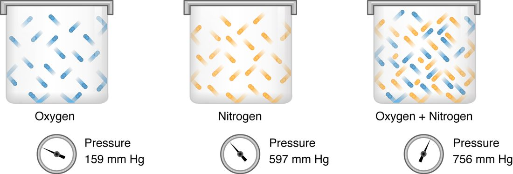

Gas exchange is the movement of oxygen and carbon dioxide between air, blood and cells, and every step of it runs downhill on partial pressure. This page explains partial pressure from Dalton's law, with worked examples at sea level and on a mountain; how Henry's law decides how much of a gas dissolves in blood; the two sites of exchange, external respiration in the lungs and internal respiration in the tissues; the normal partial pressures at each stop; and how your lungs match airflow to blood flow, alveolus by alveolus.
Partial pressure and Dalton's law
Air at sea level presses on you with a total pressure of 760 mm Hg: atmospheric pressure. About 21% of the molecules in that air are oxygen, about 78% are nitrogen, and the rest are mostly argon, with a trace of carbon dioxide. Every molecule hitting a surface contributes to the push, so the oxygen molecules supply about 21% of it.
The pressure one gas in a mixture exerts is its partial pressure: the pressure that gas would exert if it were alone in the same space. It equals the total pressure times the fraction of the mixture that gas makes up. Dalton's law, found by the English chemist John Dalton in 1801, says that the total pressure of a mixture is the sum of the partial pressures of its gases.
Partial pressures are written with a P and the gas: PO2 for oxygen, PCO2 for carbon dioxide. Figure 1 shows Dalton's law with two gases: oxygen alone and nitrogen alone each press on a gauge, and mixed in the same container their pressures simply add.

Worked example 1: partial pressures in dry air at sea level
Problem. Dry air is 20.9% oxygen, 78.1% nitrogen, 0.9% argon and 0.04% carbon dioxide. At sea level its total pressure is 760 mm Hg. Find the partial pressure of each gas and check that they add up.
- Write the rule. Partial pressure = total pressure × fraction of the gas.
- Oxygen. PO2 = 760 × 0.209 = 158.8, about 159 mm Hg.
- Nitrogen. PN2 = 760 × 0.781 = 593.6, about 594 mm Hg.
- Argon. 760 × 0.009 = 6.8, about 7 mm Hg.
- Carbon dioxide. PCO2 = 760 × 0.0004 = 0.3 mm Hg.
- Check with Dalton's law. 158.8 + 593.6 + 6.8 + 0.3 = 759.5, which is 760 mm Hg once the percentages are rounded.
Answer. About 159 mm Hg of oxygen, 594 of nitrogen, 7 of argon and 0.3 of carbon dioxide.
Water vapor and altitude
Air does not reach your alveoli dry. Your nose and airways warm it to body temperature and saturate it with water vapor. At 37 °C, water vapor always has a partial pressure of 47 mm Hg, whatever the air pressure. Water vapor takes up part of the total pressure, and the other gases share what is left.
Worked example 2: oxygen in the air you breathe in, at sea level and on a mountain
Problem. Find the PO2 of breathed-in air once it is warmed and moistened in the airways (a) at sea level, where total pressure is 760 mm Hg, and (b) on the summit of Pikes Peak, Colorado, 4,300 m up, where total pressure is about 455 mm Hg. Oxygen is 20.9% of the dry gas in both places.
- Subtract water vapor. The dry gases share the total pressure minus 47 mm Hg. Sea level: 760 − 47 = 713 mm Hg. Summit: 455 − 47 = 408 mm Hg.
- Take oxygen's share. Sea level: 713 × 0.209 = 149, about 150 mm Hg. Summit: 408 × 0.209 = 85 mm Hg.
- Compare. 85 ÷ 150 = 0.57. The oxygen fraction is identical, but the PO2 is little more than half.
Answer. About 150 mm Hg at sea level and 85 mm Hg on the summit.
This is why high places feel "thin". The air on the summit is still 21% oxygen. What falls is the total pressure, and with it the partial pressure of oxygen that pushes oxygen into your blood.
Alveolar air
By the time air mixes with the air already in your alveoli, its PO2 has fallen again, from about 150 to about 100 mm Hg, and its PCO2 has risen from almost nothing to about 40 mm Hg. Three things cause this:
- Mixing. Each breath adds only about 350 mL of fresh air to about 2,400 mL of air already in the alveoli, as you saw in the last topic.
- Oxygen is removed all the time. Blood flowing past the alveoli takes oxygen out continuously, between breaths as well as during them.
- Carbon dioxide is added all the time. Blood arriving from the tissues brings carbon dioxide, the waste product of aerobic respiration, and releases it into the alveoli.
The alveolar values are a balance. More alveolar ventilation brings in more fresh air and washes out more carbon dioxide, so alveolar PO2 rises and PCO2 falls. Less alveolar ventilation does the opposite.
Henry's law: how much gas dissolves
Open a bottle of soda and it fizzes. In the sealed bottle, carbon dioxide above the liquid was held at high pressure, so a lot of it dissolved. Opening the bottle drops that partial pressure to almost nothing, and the dissolved gas comes back out as bubbles.
Henry's law, named for the English chemist William Henry, says that the amount of a gas that dissolves in a liquid is proportional to the partial pressure of that gas above the liquid, and to the gas's solubility, how readily it dissolves in that liquid:
Dissolved gas = partial pressure × solubility
Two consequences shape gas exchange:
- Partial pressure drives the amount dissolved. Plasma exposed to alveolar air with a PO2 of 100 mm Hg dissolves oxygen until its own PO2 is 100 mm Hg. For a dissolved gas, "PO2 of the blood" means the partial pressure that the dissolved oxygen is in balance with.
- Gases differ in solubility. Carbon dioxide is about 20 times more soluble in water and plasma than oxygen. Nitrogen is less soluble than oxygen.
Worked example 3: how much oxygen dissolves in plasma
Problem. The solubility of oxygen in plasma at body temperature is 0.003 mL of oxygen per 100 mL of blood for each mm Hg. How much oxygen dissolves in 100 mL of blood whose PO2 is 100 mm Hg? Resting tissues use about 250 mL of oxygen a minute, and the heart pumps 5 L (50 × 100 mL) of blood a minute. Could dissolved oxygen alone supply them?
- Apply Henry's law. Dissolved O2 = 100 mm Hg × 0.003 = 0.3 mL per 100 mL of blood.
- Scale to one minute. 0.3 mL × 50 = 15 mL of dissolved oxygen delivered per minute.
- Compare with need. 15 ÷ 250 = 0.06, about 6% of what resting tissues use, even if every bit of it were taken out.
Answer. Only 0.3 mL per 100 mL: far too little. Nearly all the oxygen in blood is carried bound to hemoglobin, which is the subject of the next topic. Dissolved oxygen still matters, because it sets the PO2, and the PO2 decides how much oxygen hemoglobin picks up.
What sets the rate of exchange
Oxygen and carbon dioxide cross the respiratory membrane by simple diffusion: nothing pumps them. You met the factors that set a diffusion rate earlier. For a gas crossing the respiratory membrane, they are:
- The partial pressure gradient. Each gas diffuses from higher to lower partial pressure of that gas, independently of the others. A bigger difference means faster diffusion.
- Surface area. Your roughly 480 million alveoli give a total area of about 70 m², the floor area of a small apartment.
- Thickness. The respiratory membrane, alveolar wall plus capillary wall and their fused basement membranes, is only about 0.5 µm thick.
- Solubility. A more soluble gas crosses faster at the same gradient, which is why carbon dioxide needs only a small gradient.
Disease slows exchange through these factors. Destroyed alveolar walls reduce the area. Fibrosis, or fluid collecting in the alveolar walls, thickens the membrane. Breathing air with a low PO2, as on a mountain, shrinks the gradient.
External respiration: exchange in the lungs
External respiration (also called pulmonary gas exchange) is the exchange of gases between the air in the alveoli and the blood in the pulmonary capillaries. Follow one red blood cell into a pulmonary capillary:
- It arrives in blood from the pulmonary artery with a PO2 of about 40 mm Hg and a PCO2 of about 46 mm Hg: blood that has just come back from the tissues.
- The alveolar air beside it has a PO2 of about 100 and a PCO2 of about 40 mm Hg.
- Oxygen diffuses from the alveolus into the blood down a gradient of 100 − 40 = 60 mm Hg. Carbon dioxide diffuses from the blood into the alveolus down a gradient of 46 − 40 = 6 mm Hg.
- Diffusion continues until the blood's partial pressures match the alveolar air. Blood leaves the capillary with a PO2 of about 100 and a PCO2 of about 40 mm Hg.
Worked example 4: why a small carbon dioxide gradient is enough
Problem. The oxygen gradient across the respiratory membrane is 60 mm Hg and the carbon dioxide gradient is 6 mm Hg. Carbon dioxide is about 20 times as soluble as oxygen. At rest, you take up about 250 mL of oxygen and give off about 200 mL of carbon dioxide each minute. Show that the small carbon dioxide gradient can move a similar volume.
- Compare the gradients. 60 ÷ 6 = 10: oxygen has a gradient 10 times larger.
- Compare the solubilities. Carbon dioxide dissolves about 20 times more readily, so at the same gradient it would cross about 20 times faster.
- Combine. Relative rate of carbon dioxide ÷ oxygen ≈ (6 × 20) ÷ (60 × 1) = 120 ÷ 60 = 2.
Answer. Carbon dioxide crosses about twice as readily as oxygen for these gradients, so a gradient of only 6 mm Hg easily clears the 200 mL made each minute. A small gradient does not mean little exchange.
The exchange is fast. At rest, a red blood cell takes about 0.75 seconds to pass through a pulmonary capillary, but its partial pressures match the alveolar air within the first third of that time. During hard exercise, blood moves through in about a third of a second, and healthy lungs still finish in time. In lungs with a thickened membrane, exchange slows, and during exercise the blood may leave before it has finished loading oxygen.
Internal respiration: exchange in the tissues
Internal respiration (also called tissue gas exchange or systemic gas exchange) is the exchange of gases between the blood in systemic capillaries and the tissue cells. The gradients now run the other way (Figure 2):
- Arterial blood arrives with a PO2 of about 95 and a PCO2 of about 40 mm Hg.
- The cells use oxygen for aerobic respiration and make carbon dioxide, so the tissue fluid around them has a PO2 of about 40 mm Hg or lower and a PCO2 of about 46 mm Hg. Inside the cells, PO2 is lower still.
- Oxygen diffuses out of the blood, through the tissue fluid and into the cells. Carbon dioxide diffuses the opposite way, into the blood.
- Blood leaves the tissue as venous blood with a PO2 of about 40 and a PCO2 of about 46 mm Hg.
![Gas exchange in a body tissue. On the left, orange tissue cells with blue nuclei; in the middle, a pale band of interstitial fluid; on the right, blood plasma in a capillary holding a red blood cell. Black arrows carry carbon dioxide out of the tissue cells, across the interstitial fluid and into the plasma and the red blood cell. Purple arrows carry oxygen the other way: a large one from the red blood cell, where it has detached from hemoglobin, and a small one from oxygen dissolved in the plasma, into the tissue cells.](../figures/os-22-23.jpg)
Internal respiration adjusts itself to demand. When a muscle works harder, it uses oxygen faster, so the PO2 in its tissue fluid falls, sometimes below 20 mm Hg. The gradient from blood to tissue gets steeper, and more oxygen leaves the blood, with no signal needed. Carbon dioxide rises in the working tissue, and the gradient that removes it steepens in the same way.
Do not confuse internal respiration with cellular respiration. Internal respiration is gases crossing between blood and cells. Cellular respiration is the chemistry inside the cell that uses the oxygen and makes the carbon dioxide.
| External respiration | Internal respiration | |
|---|---|---|
| Where | Alveoli and pulmonary capillaries | Systemic capillaries and tissue cells |
| Oxygen moves | From air into blood | From blood into cells |
| Carbon dioxide moves | From blood into air | From cells into blood |
| Blood arriving (PO2 / PCO2) | About 40 / 46 mm Hg | About 95 / 40 mm Hg |
| Blood leaving (PO2 / PCO2) | About 100 / 40 mm Hg | About 40 / 46 mm Hg |
| Oxygen gradient | About 100 − 40 = 60 mm Hg | About 95 − 40 = 55 mm Hg, larger in working tissue |
| Mechanism | Simple diffusion down partial pressure gradients | Simple diffusion down partial pressure gradients |
Normal partial pressures along the path
Figure 3 follows oxygen and carbon dioxide from the air to the tissues and back. At every step, each gas moves downhill on its own partial pressure.
| Where | PO2 (mm Hg) | PCO2 (mm Hg) |
|---|---|---|
| Dry air at sea level | 159 | 0.3 |
| Breathed-in air, warmed and moistened | 150 | 0.3 |
| Alveolar air | 100 | 40 |
| Arterial blood | About 95 (normal 80 to 100) | 40 (normal 35 to 45) |
| Tissue fluid at rest | About 40, lower in active tissue | About 46 |
| Venous blood returning to the lungs | About 40 | About 46 |
Why is arterial PO2 a little below alveolar PO2? Two small effects add up. A little venous blood joins the arterial blood without passing any alveolus: some bronchial veins drain into the pulmonary veins, and a few small cardiac veins drain straight into the left side of the heart. And not every alveolus gets exactly the right amount of air for its blood flow, which is the subject of the next section. The gap is normally about 5 to 10 mm Hg and widens with age, so arterial PO2 drifts down across adult life.
Ventilation–perfusion coupling
For an alveolus to do any good, it needs both air and blood. Perfusion (per- = through, fus- = pour) is the flow of blood through a tissue's capillaries. The ventilation–perfusion ratio, written V/Q (V for ventilation, Q for blood flow), compares the two. For your lungs as a whole at rest, alveolar ventilation is about 4 L/min and blood flow through the lungs, the cardiac output, is about 5 L/min, so the overall V/Q is about 0.8.
Consider the two extremes:
- Blood but no air (V/Q = 0). If an alveolus is collapsed, filled with fluid, or cut off by a plug of mucus, blood flows past it and picks up nothing. That blood leaves with the partial pressures of venous blood, PO2 40 and PCO2 46, and mixes into the arterial blood. Blood that passes the lungs without meeting air is called a shunt.
- Air but no blood (V/Q very high, approaching infinity). If blood flow to an alveolus is blocked, for example by a pulmonary embolism, the air in it takes part in no exchange. It is alveolar dead space, which you met in the last topic, and its air stays like breathed-in air.
Most real problems lie between these extremes: some alveoli get too little air for their blood flow and others too much. Low-V/Q alveoli send blood with a low PO2 into the arteries, and the well-ventilated alveoli cannot make up for it, because blood leaving them cannot carry much more oxygen than normal. Uneven V/Q is the most common reason for a low arterial PO2 in lung disease.
Matching within the healthy lung
Even healthy lungs are uneven. When you stand, gravity pulls blood toward the bases of your lungs, so the bases get much more blood flow than the tops. They also get more ventilation, but the difference in blood flow is larger. So the tops of the lungs have a high V/Q, about 3, and the bases a low one, about 0.6. This small mismatch is part of why arterial PO2 sits a little below alveolar PO2.
Local control: hypoxic pulmonary vasoconstriction
Ventilation–perfusion coupling is the local matching of blood flow to airflow, alveolus by alveolus. Its main mechanism is hypoxic pulmonary vasoconstriction (hypo- = under, ox- = oxygen, pulmon- = lung):
- A small airway is partly blocked, so the alveoli beyond it get less fresh air, and their PO2 falls.
- Smooth muscle in the walls of the pulmonary arterioles next to those alveoli senses the low PO2 directly and contracts.
- The arterioles narrow, their resistance rises, and less blood flows to the poorly ventilated alveoli.
- That blood goes instead to well-ventilated alveoli, where it can load oxygen, so arterial PO2 stays closer to normal.
Notice that this is the opposite of what low oxygen does in the systemic circulation. In your muscles or heart, low PO2 dilates arterioles and brings in more blood. In the lungs, low PO2 constricts them and sends blood elsewhere.
| Systemic arterioles | Pulmonary arterioles | |
|---|---|---|
| Response to low PO2 | Dilate | Constrict |
| Effect on blood flow | More blood to the low-oxygen tissue | Less blood to the poorly ventilated alveoli |
| What it matches | Blood supply to the tissue's use of oxygen | Blood flow to the alveoli's airflow |
The airways help a little too. A high PCO2 in the air of an alveolar region relaxes the smooth muscle of its bronchioles, letting more air in, and a low PCO2 narrows them. This effect is weaker than the response of the arterioles.
Hypoxic pulmonary vasoconstriction works well when a few regions are poorly ventilated. When the whole lung has a low alveolar PO2, as high on a mountain, arterioles constrict everywhere at once. There is nowhere for the blood to go, and pressure in the pulmonary arteries rises, which strains the right ventricle.